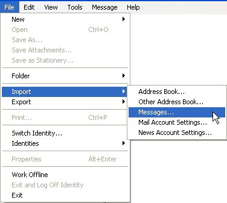
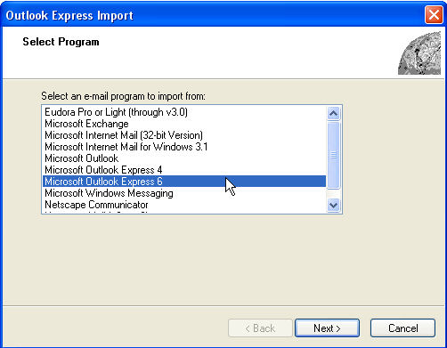
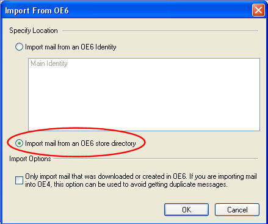
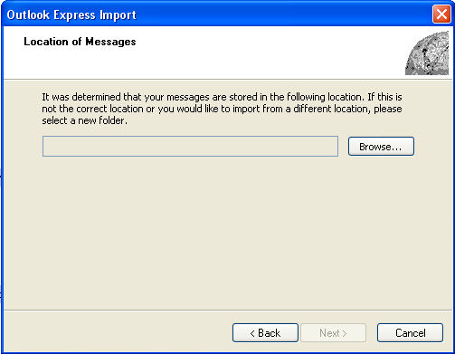
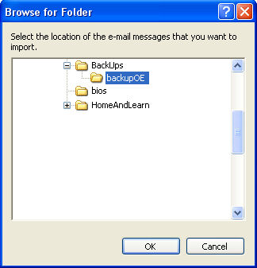
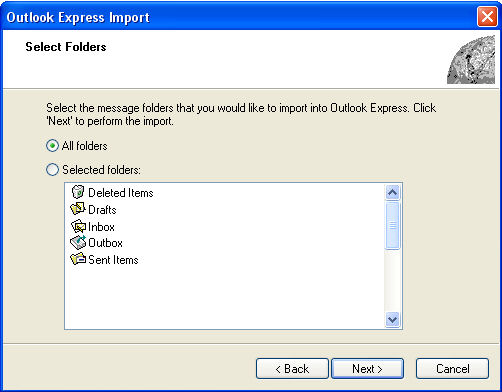
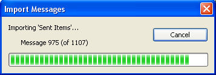

Free
computer Tutorials
|
Free
computer Tutorials
|
|
 home home |
Stay at Home and Learn | ||||
How to Restore Outlook Express Emails
In a previous tutorial, you learnt how to backup your Outlook Express emails. In this tutorial, we'll see how to restore them if anything goes wrong with your PC. The process is not quite as long as it was for saving them. Here's how to do it.
How to Restore Outlook Express backups
 When you click Import > Messages, you get a Wizard popping up. The first screen looks like this:  Select Microsoft Outlook Express 6 from the list, then click Next. You'll then get this screen:  Select "Import mail from and OE6 store directory", as in the image above. Then click OK. You'll then be taken to the next step of the wizard:  You now need to select the folder where you saved your Outlook Express backups. So click the Browse button. You can then navigate to where you saved all those DBX files. In the image below, we've navigated to our second hard drive. If you have your backups on a backup CD, you would navigate to there:  Click the OK button when you have located your backup Outlook Express folder. Click Next when you are return to the Location of Messages step of the Wizard. The next step of the wizard will then look like this:  You can select either individual folder to import, or import all the folder that the Wizard finds in your backup folder. We've chosen All folders. Click the Next button to continue. Outlook Express goes to work, importing your backup DBX folders:  When your emails have been imported, click the Finish button on the final step of the Wizard. You will be congratulated on successfully importing your messages. Such a lengthy process is it, you deserve those congratulations!
In the next tutorial, you'll learn how to backup an Outlook Express Address book. Learn How to Backup an Outlook Express Address Book --> |
|||||
|